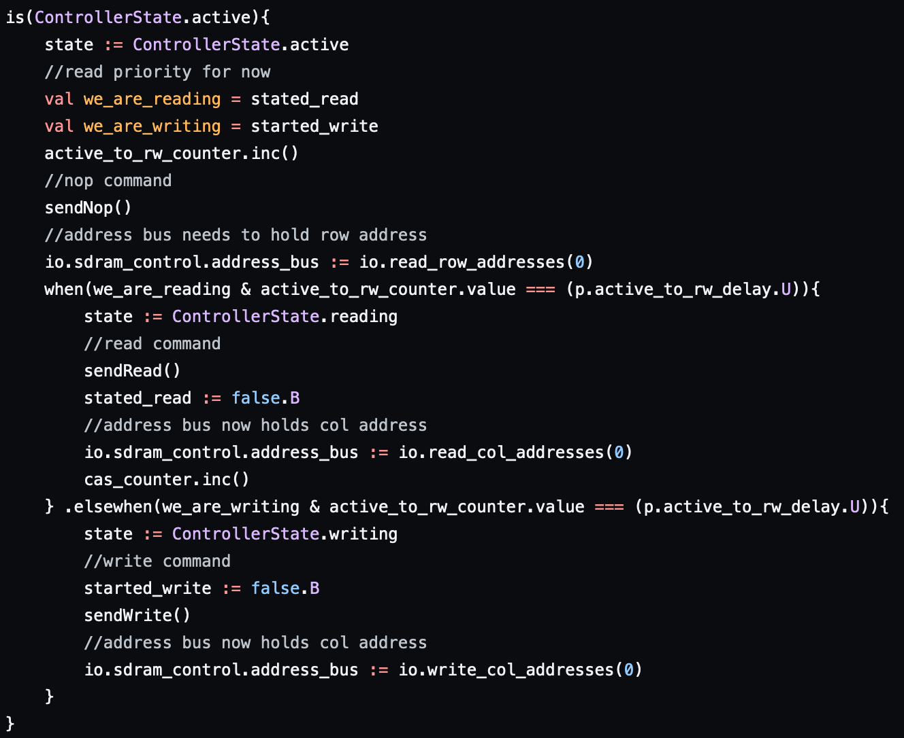
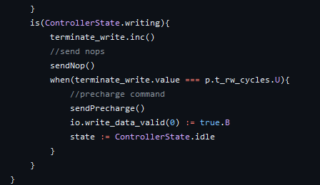
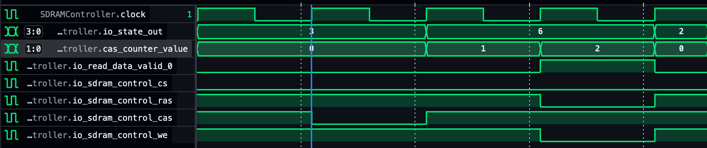

SDRAM Controller Generator
A Chisel hardware generator for SDRAM controllers from their datasheets
Gary Mejia and Joaquin Ortiz
March 15, 2024
Layout of Presentation
- Introduction to Memories
- Why generate controllers?
- Memory Model Internals
- Finite State Machine Internals
- Challenges up to this point
- Future Work
Introduction to memories
- Humans need to remember things: names, faces, dates, tasks
- Computers need to remember things too: previous computations states
- Different types of memory cells: SRAM(bottom), DRAM(top), flash(not pictured)
DRAM Memory
SRAM Memory Cell
What is SDRAM?
- Synchronous dynamic random access memory
- Controlled by an external clock
- Only uses 1 edge
- Allows for data from SDRAM to join the pipeline of other instructions for efficient use and faster processing
SDRAM Module
Communication to Memory
- Accessing memory is not as simple as giving an address
- User must respect several timing characteristics
- Data retrieval likely is not instantaneous and would need to wait
- Read data may be garbage until a certain number of cycles pass
Communication to Memory Example
Why generate controllers?
- Generating memory itself would be fun but also already done -
OpenRAM
- It is also too low level and depending on what memory you are generating you can’t use a standard CMOS process - DRAM
- Controllers themselves have wide amount of parameters to turn
- CAS latency - Cycles from start of a read command to read data being valid
- Running frequency
- Data and Address Widths
- Burst Length and Type
- Programming of the SDRAM chip
- Can also target different SDRAM modules as they may differ in initialization procedures
Memory Model Internals
- As easy as MT48LC1M16A1 S
- Multiple banks, each bank has rows and columns
- Need to activate row before access and deactivate when done
- Burst read/write - iterate through columns in row
- Need to send refresh every (parameter) cycles
- Runtime adjustable CAS; 1-3 cycles
- Implemented with variable shift register
- Read-write masking
- Parameterized banks, rows, cols, refresh timer
- Tri-state data pins! (Or at least, it’s supposed to)
Pinout
MT48LC1M16A1 Functional Diagram

Hardware Parameters and IO
| Parameters | SDRAM IO |
|---|---|
 |
 |
Finite State Machine
Finite State Machine Internals

Initialization State

Idle State

Active State

Reading/Writing State
| Read | Write |
|---|---|
 |
 |
Refreshing 1

Refreshing 2
| From Idle | From Active |
|---|---|
 |
 |
Don’t interrupt read or write; try to refresh 2 cycles early. No manual refresh…
Results
CAS Latency of 3

CAS Latency of 2

CAS Latency of 1

Presets
- Add more versatility to controller
- May break compatibility with sample memory model if modified too much
- Includes activate, refresh, and write timings
- Parameterized into cycles
Preset Example
Closing the Loop
Controller
- Basic FSM transitions
- Row active delay
- Memory model initialization
- Read/Write states
- CAS Latency
- Refreshing
- Presets
Memory Model
- Basic activate->read/write->precharge loop (no delay)
- Burst read/write
- CAS Latency
- Write masking
- Refresh
Challenges
Challenges with Chisel itself
- Chisel 3.6 does not have good support for tri-state/inout pins
- BlackBox incompatible with ChiselTest
- Requires Verilog testbenches and simulators such as Verilator and iVerilog
- Analog conditional connections not allowed yet every single Verilog
SDRAM controller does this
- Maybe it doesn’t like last connection semantics?
- Made masking difficult to implement
- I’m not sure this would actually work in hardware…
- Also doesn’t really support edge-triggered everything, but that’s not really a problem
- BlackBox incompatible with ChiselTest
Challenges with memories
- Size of real memory chip is somewhat large
- Causes SBT to run out of memory when fully emulated
- Need to know clock rate to properly emulate decay/activate latency
- And some other things about the memory that we aren’t emulating
- Such as row activation latency, write-after-read bus coherency
Future Work and Current Status
- For the end of this class
- More tests - 7 tests total (4 for Model, 3 for FSM)
- Include a refresh command - currently only done in initialization - Done
- Maybe basic Github Actions - Done
- Main program to generate Verilog - Done
- Far Future
- Other memory models? - Supported?
- This implementation is kind of specific
- Support burst reads and writes - Done
- Support more complicated workload loads
- Allow for multiple channels and internal scheduling
- Formal Verification?
- Other memory models? - Supported?
What We Learned from CSE 228A
- For Datasheet reading, each operation’s section will show the
applicable timing constraint
- Active cares about t_rcd, Write cares about t_wr, Read cares about CAS latency
- Targeting multiple SDRAM modules is a cool idea for a parameter
- But a single SDRAM has so many options for parameters on its own that each one can likely be a CSE 228A final project on its own
- Experimental features are not fun to use
- Very little documentation from others using these features leaves us to play around with code more that we would like to
Advice for the Future Students
- Reusing code is always better than making your own
- Our JSON parser is a library we found, we just create a Map to represent our datasheet from the JSON file
- Avoid Experimental Libraries unless necessary
- If for whatever reason we need to update Chisel, our Analog functionality may need a rewrite
- Learn Git and version control
- Our usage of branches isolated our development and we did not have to deal with weird merge conflicts which is common in CSE 101 and 130
Calls for Contributions and Questions
https://github.com/gmejiamtz/sdram_controller_generator
- No tool installation required due to Github Codespaces! Inline
Verilog attempted - see commit e58cd19
- But it broke the tests so it was commented out